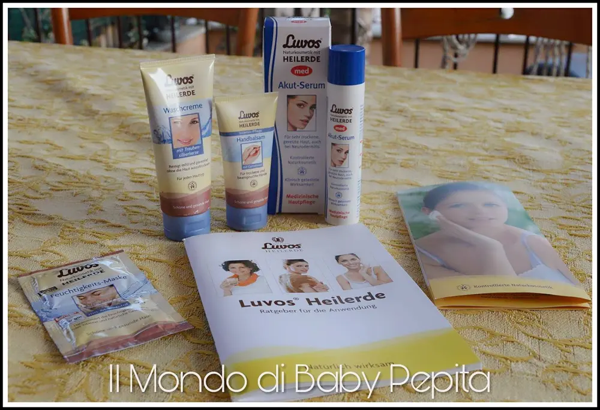
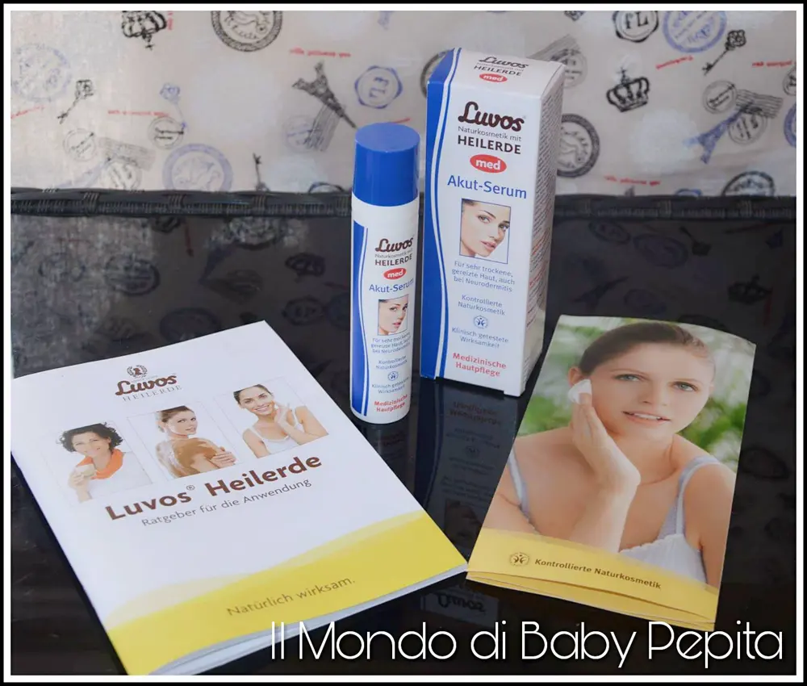
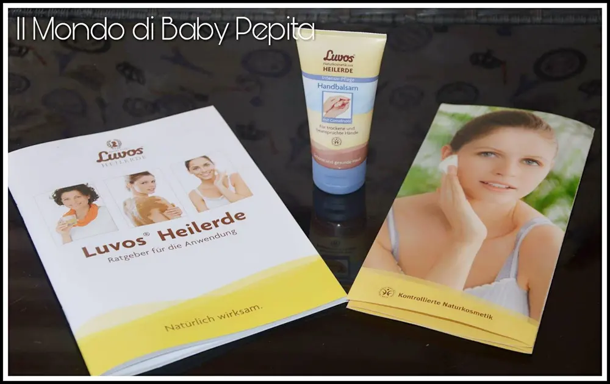
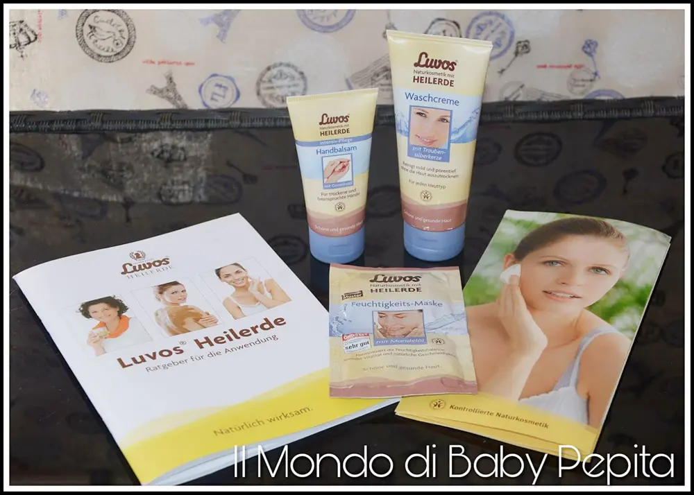
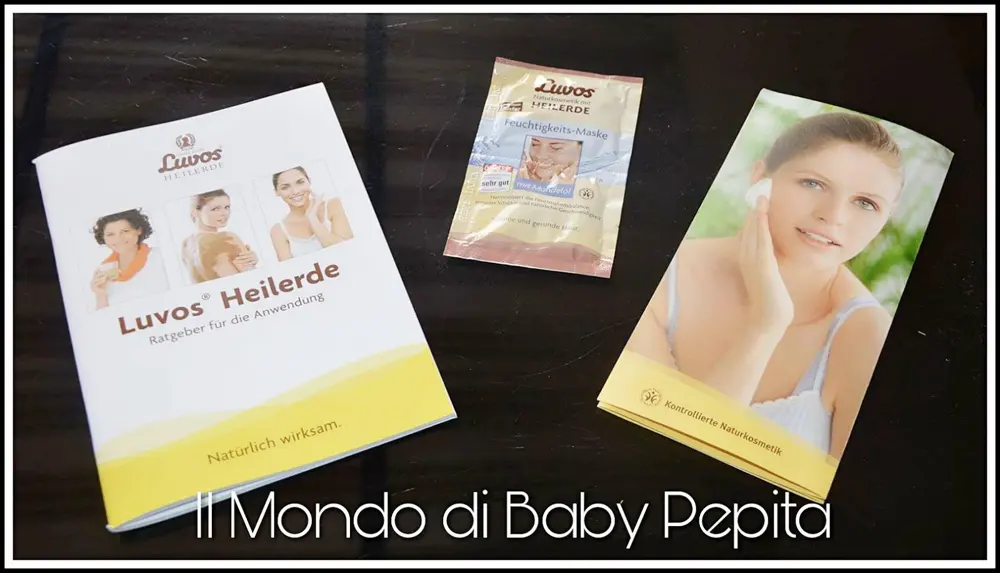
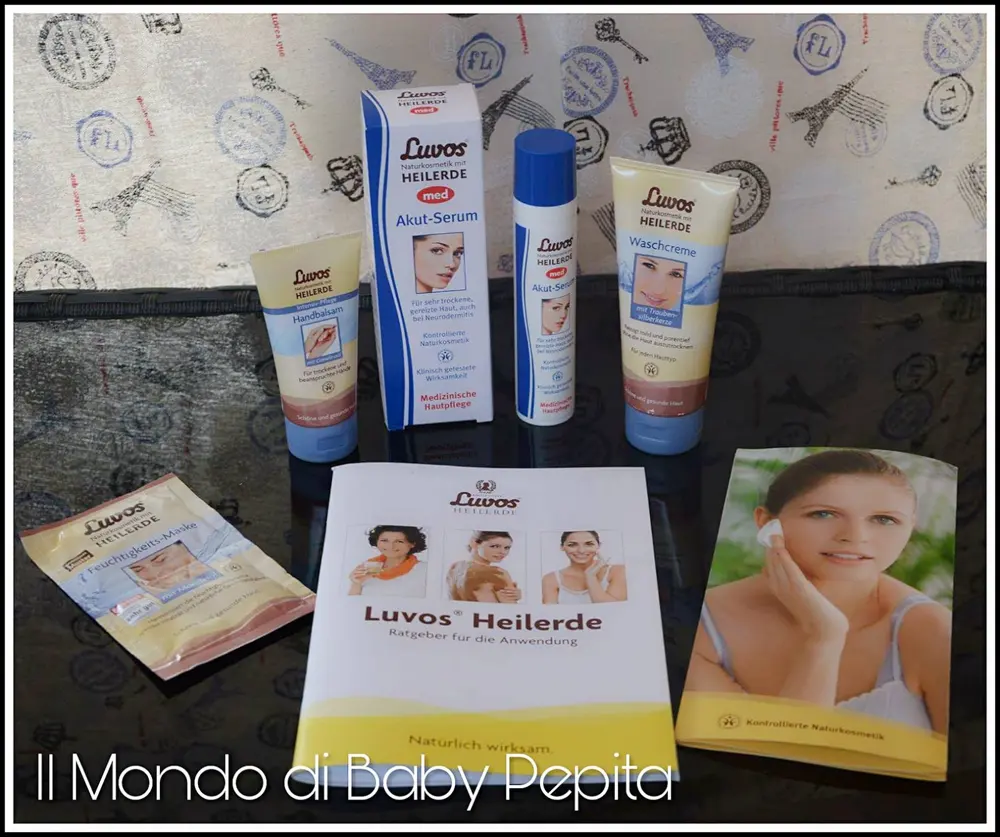

LUVOS HEILERDE

Buonasera ragazzi. Sono un pò assente tra il caldo e varie cose ma non mi dimentico di testare e provare nuovi prodotti per poi parlarvene.
Ed oggi infatti, sono qui per parlarvi di creme per il viso e il corpo. L'azienda di cui approfondiremo oggi è un'azienda tedesca la LUVOS.

La LUVOS oltre a fornire creme di bellezza, tratta anche creme curative e medicinali con estratti di argilla.
Ho avuto modo di provare diversi tipi di creme, ovvero:
- Luvos med Akut-Serum ( LUVOS med siero acuto)
- Handbalsam (balsamo mani)
- Waschcreme (crema viso)
- Feuchtigkeits-Maske (maschera viso)Luvos med Akut-Serum è particolarmente indicato per la pelle delicata del viso e per parti del corpo fortemente irritati. Assorbe rapidamente e non unge la pelle ma la lascia liscia e setosa.
È clinicamente e dermatologicamente testata.

Questo siero viene applicato di mattina e di sera ma anche quando si sente l'esigenza e si sente la pelle irritata.

Handbalsam è una crema rigenerante mani, offre una protezione efficace ed è ottima per mani ed unghie. Contiene l'olio di camelina che lenisce la pelle e rende le vostre mani davvero morbide.

Waschcreme è un vero e proprio lavaggio quotidiano che rigenera il viso. I preziosi minerali garantiscono la pulizia approfondita della vostra pelle, liberandola anche dalle sostanze inquinanti e le cellule morte. Contiene l'olio di mandorle che impedisce di far seccare la pelle. Questa crema è adatta ad ogni tipologia di pelle ed è ottima anche come struccante makeup.
Feuchtigkeits-Maske è la classica crema maschera donando armonia al viso e pelle sana e bella.

Ci sono 3 tipi di maschere e cioè all'olio di mandorle, all'olio di soia e all'olio di nocciolo di pesce.
Io ho ricevuto quella all'olio di mandorle e cioè è una maschera idratante, dona vitalità e morbidezza.
Come usarla: Viene applicata in modo uniforme su tutto il viso e décolleté, ovviamente evitando gli occhi e la bocca.
Tenerla in posa per 10 - 15 minuti e dopo rimuoverla con acqua tiepida massaggiando delicatamente.

Per saperne di più di tutti i prodotti di quest'azienda davvero molto valida per diversi tipi di pelle e di problemi cutanei il sito è Luvos